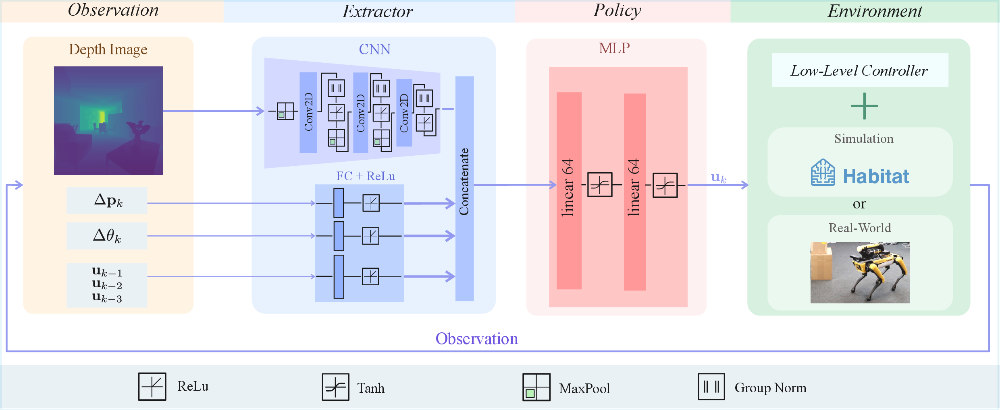

Methodology

Problem
- Find the shortest path to any vantage point from which a target becomes visible — not just navigate to its location.
- End-to-end RL approach with no map required, enabling operation in unseen environments.
Observations & Actions
- Inputs: Egocentric depth image, relative position & orientation to target, and three most recent actions.
- Actions: Continuous commands to move forward or rotate in place (decoupled for stable training).
Architecture & Training
- Three-layer CNN for depth features + single-layer perceptrons for remaining inputs.
- Trained with Proximal Policy Optimization (PPO) in the Habitat simulator using Gibson indoor scenes.
Reward Design
- Dense navigation reward: Encourages progress toward the optimal inspection point.
- Orientation reward: Rewards facing the target.
- Stall penalty: Prevents oscillating in place.
- Step cost: Incentivizes efficient movement.
- Terminal reward: Measures proximity to the ground-truth optimal viewpoint at episode end.
- Collision & timeout penalties: Enforce safe and timely behavior.
Ground-Truth Benchmark
- A* search with visibility checks computes the provably shortest inspection path under full map knowledge.
- Used for training only — not needed at test time.